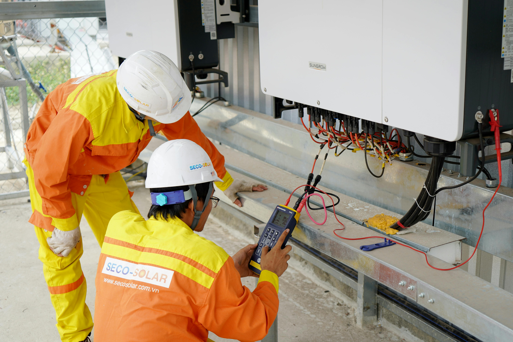
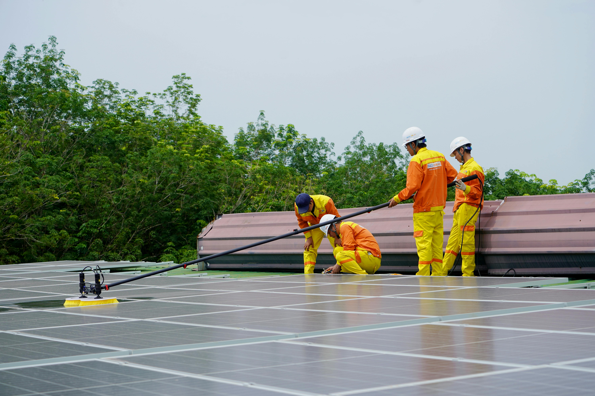

Renewable Energy Guide
Solar is a strong investment when the technical, safety, and compliance details are treated as part of the project.
Solar power is no longer a distant sustainability idea. For many homeowners, commercial facilities, farms, warehouses, and public projects, it is now a practical way to reduce electricity costs, support energy resilience, and improve environmental performance. In a country with strong sunlight and rising interest in distributed renewable energy, the question is not only whether solar can work. The better question is whether the system is properly sized, safely connected, documented, inspected, and maintained.
Recent public discussions around unregistered or “guerrilla” solar installations in Meralco service areas have made one thing clear: the future of rooftop solar should not be built on shortcuts. The point is not to discourage solar. It is to protect the value of solar by making sure each installation is safe for the property owner, workers, utility personnel, neighbors, and the distribution grid.
1. Why solar is attractive for Philippine projects
Solar power appeals to project owners for several reasons. It can reduce daytime electricity purchases from the grid, improve predictability in energy planning, support corporate sustainability goals, and make better use of unused roof areas or open spaces. For facilities with daytime operations, such as offices, warehouses, schools, laboratories, farms, and light industrial sites, solar generation can align well with peak daytime energy demand.
The environmental case is also strong, but it should be stated carefully. Solar panels do have manufacturing, logistics, land use, maintenance, and end-of-life considerations. Still, lifecycle assessments generally show that solar PV has much lower greenhouse gas emissions than fossil fuel generation. In other words, solar is not impact-free, but it remains one of the cleaner electricity pathways when responsibly planned and managed.

2. How rooftop solar works in practical terms
A solar photovoltaic system converts sunlight into electricity. Solar cells contain semiconductor materials. When sunlight is absorbed by those materials, electrons are set in motion and electrical current is produced. That electricity is then processed through system components such as inverters, protection devices, wiring, meters, and monitoring equipment so it can be used by the property.
For a project owner, the important point is not memorizing the physics. The important point is understanding that a solar installation is an electrical system connected to a building, a load profile, and sometimes a distribution grid. That means design quality matters. Equipment specifications matter. Installation workmanship matters. Inspections matter. Documentation matters.
3. Why net-metering and proper interconnection matter
Under the Renewable Energy Act framework, net-metering allows qualified end-users to install renewable energy systems and enter into arrangements with distribution utilities, subject to technical considerations and interconnection standards. In Meralco’s public guidance, net-metering is described as a program under RA 9513 allowing renewable energy facilities of up to 100 kW, where excess renewable electricity can be exported and credited on the customer’s bill.
This is where proper process becomes important. A grid-connected solar installation is not simply a set of panels on a roof. The utility needs to know whether the system can be safely integrated. The local government may issue inspection documents. The service entrance may need evaluation. A bi-directional meter may be required. The project may need technical documents, application forms, agreements, and testing before final energization.
For a serious project owner, the lesson is simple: plan the interconnection path early. Do not install first and ask documentation questions later. The cost of correcting an undocumented or poorly coordinated system can be higher than doing the proper review at the beginning.

4. The risks of shortcut installations
The concern around unregistered or undocumented solar systems is not merely administrative. It can become a safety and reliability issue. A system that is poorly designed or improperly connected may create electrical hazards, equipment damage, unstable operation, backfeed risks, or future problems when the property is sold, renovated, insured, inspected, or expanded.
Shortcut installations also weaken the business case for solar. A system may look cheaper at first because design, permits, inspections, and documentation were skipped. But those same missing pieces can later delay net-metering approval, complicate insurance claims, require rework, or expose the owner to enforcement or safety concerns.
For commercial and institutional projects, the reputational risk also matters. Solar is often presented as a sustainability action. If the system is undocumented, unsafe, poorly maintained, or out of step with requirements, it can undermine the very environmental and governance message the project is trying to communicate.
5. What project owners should check before proceeding
Before approving a solar proposal, project owners should ask questions that go beyond price per panel. A good proposal should explain the system size, expected output, equipment specifications, roof or site assumptions, electrical design, installer qualifications, interconnection pathway, warranties, maintenance plan, monitoring system, and documentation responsibilities.
For larger properties, environmental and engineering context should also be considered. Will the solar project affect drainage? Will roof loading need structural review? Will panel cleaning generate wastewater or runoff concerns? Will batteries be included later? Will the installation affect existing permits, emergency access, fire safety planning, or facility operations? Will old panels, damaged equipment, packaging, or batteries need a responsible end-of-life plan?
Practical solar readiness checklist
- Review the facility’s daytime load profile before deciding system size.
- Confirm roof condition, structural capacity, access, drainage, and shading constraints.
- Ask for signed electrical plans, equipment specifications, protection details, and monitoring arrangements.
- Clarify who will handle utility coordination, local inspection documents, and net-metering requirements.
- Check whether the system remains within the applicable net-metering or interconnection threshold.
- Require a maintenance plan for panel cleaning, inverter checks, wiring inspection, and performance review.
- Keep records of warranties, manuals, inspection results, permits, photos, and commissioning documents.
- Plan for future changes such as expansion, battery storage, generator integration, or additional electrical loads.
6. Is solar still sustainable after considering its drawbacks?
Yes, solar remains a strong sustainability option when it is responsibly planned. The honest answer is that solar is not magic. Manufacturing panels requires materials and energy. Large solar farms can raise land use concerns. Batteries introduce additional safety, cost, and end-of-life questions. Rooftop systems require maintenance, and performance can be affected by shading, dust, weather, and poor design.
But these drawbacks are manageable when they are identified early. For many projects, the better comparison is not “solar versus no impact.” It is “well-planned solar versus continued dependence on higher-emission electricity sources.” Responsible solar planning recognizes both sides: the benefits of cleaner electricity and the obligation to install, operate, and eventually retire equipment properly.

Good solar projects are built on good project management
The solar conversation should not be reduced to “install or do not install.” For most project owners, the real decision is how to install correctly. A solar project should be treated as part of the facility’s engineering, environmental, safety, and compliance system. That is where multidisciplinary review becomes valuable.
NBCS approaches renewable energy discussions with the same practical mindset used in environmental assessment, regulatory coordination, monitoring, wastewater, solid waste, water resources, and engineering-related project support. Solar can be a clean energy opportunity, but it should still pass through clear technical review, responsible documentation, and realistic lifecycle planning.
Planning a solar or renewable energy project?
NBCS can help project owners think through the practical side of renewable energy adoption: site conditions, environmental considerations, documentation needs, regulatory coordination, water and wastewater implications, solid waste concerns, and the technical questions that should be addressed before implementation.
References
- Republic Act No. 9513, Renewable Energy Act of 2008
- Meralco Solar & Net-Metering
- Meralco Net-Metering Application Process
- Department of Energy: Whole-of-Government Push on Net-Metering Permits, Approvals, and Benefits
- U.S. Energy Information Administration: Photovoltaics and Electricity
- IEA PVPS: Environmental Life Cycle Assessment of Electricity from PV Systems